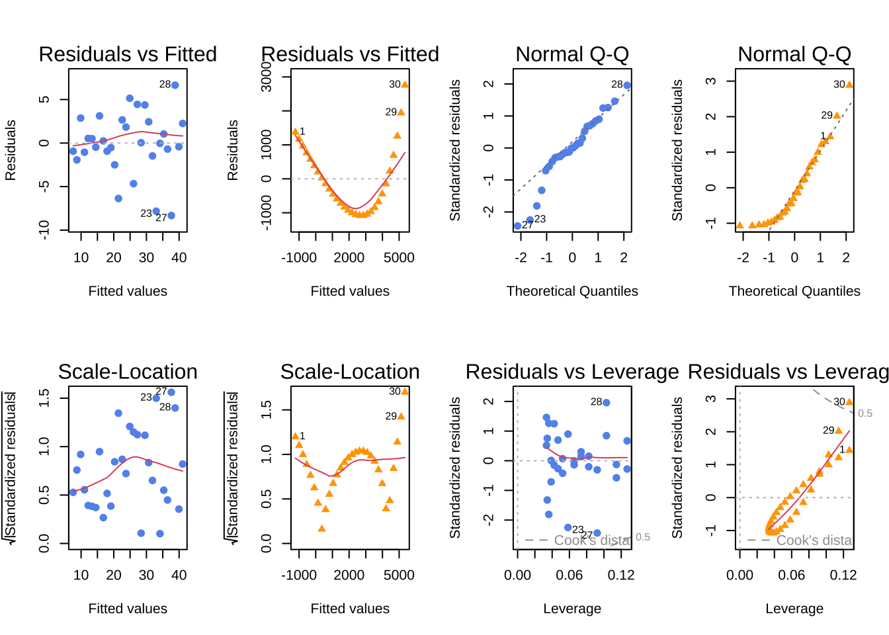
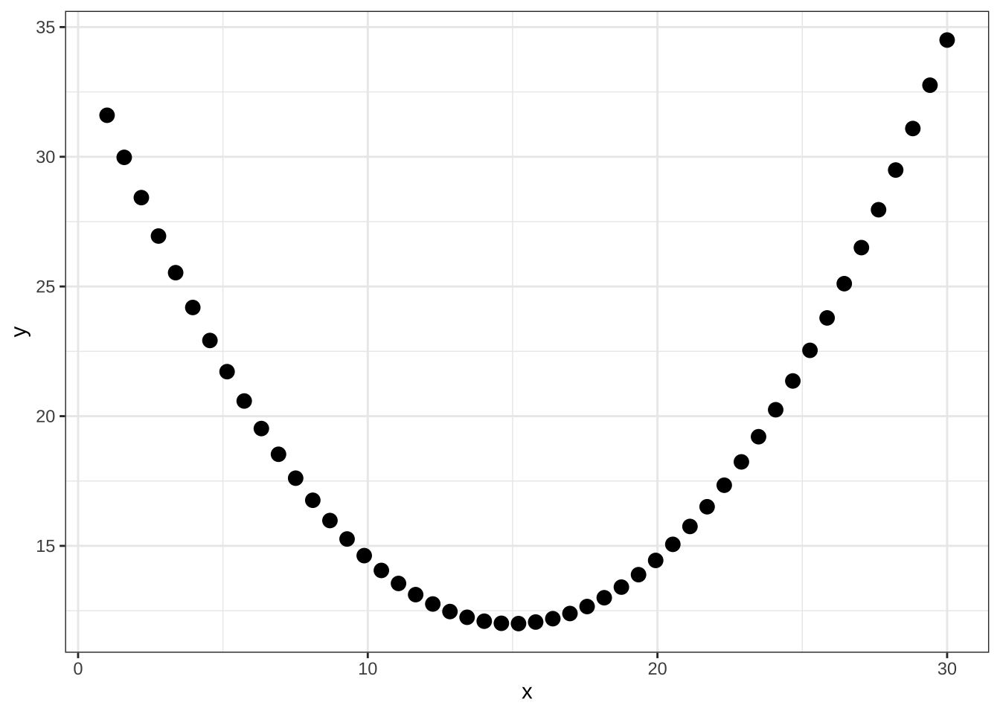

Code
library(tidyverse)
library(palmerpenguins)
library(showtext)
library(car)
font_add_google("Lato", "Lato")
showtext_auto()
library(patchwork)
library(ggeffects)
library(performance)
library(broom)
library(flextable)May 15, 2023
\[ residual = y_i - \hat{y} \]
\[ SS_{residuals} = (-1)^2 + (4)^2 + (-2)^2 + (-3)^2 = 30 \] # R2
\[ \begin{align} R^2 &= 1 - \frac{\sum_{i = 1}^{n}(y_i - \hat{y})^2}{\sum_{i = 1}^{n}(y_i - \bar{y})^2} \\ &= 1 - \frac{SS_{residuals}}{SS_{total}} \end{align} \]
\[ \begin{align} y &= mx + b \\ y &= b_1x + b_0 + \epsilon = b_0 + b_1x + \epsilon \\ y &= \beta_1x + \beta_0 + \epsilon = \beta_0 + \beta_1x + \epsilon \end{align} \]
\[ \begin{align} H_0 &: \beta_1 = 0 \\ H_A &: \beta_1 \not = 0 \end{align} \]
set.seed(666)
data <- cbind(x = 1:5, y = rnorm(5, mean = 2, sd = 1)*1:5) %>%
as.data.frame()
noline <- ggplot(data, aes(x = x, y = y)) +
geom_point(size = 5, color = "darkgreen", fill = "slategrey", shape = 21, stroke = 3) +
theme_classic() +
labs(x = "Predictor", y = "Response") +
theme(text = element_text(size = 14))
opt1 <- ggplot(data, aes(x = x, y = y)) +
geom_point(size = 5, color = "darkgreen", fill = "slategrey", shape = 21, stroke = 3) +
geom_function(fun = function(x) 2*x, color = "coral2", linewidth = 2, lty = 2) +
theme_classic() +
labs(x = "Predictor", y = "Response") +
theme(text = element_text(size = 14))
opt2 <- ggplot(data, aes(x = x, y = y)) +
geom_point(size = 5, color = "darkgreen", fill = "slategrey", shape = 21, stroke = 3) +
geom_function(fun = function(x) -2*x + 10, color = "coral2", linewidth = 2, lty = 2) +
theme_classic() +
labs(x = "Predictor", y = "Response") +
theme(text = element_text(size = 14))x_lm <- seq(from = 1, to = 30, by = 1)
set.seed(666)
y_lm <- round(runif(length(x_lm), min = 1, max = 1.5), 1)*x_lm + runif(length(x_lm), min = 1, max = 10)
df_lm <- cbind(
x = x_lm,
y = y_lm
) %>%
as_tibble() %>%
mutate(outlier = case_when(
rownames(.) %in% c(23, 27, 28) ~ "outlier",
TRUE ~ "ok"
))
Call:
lm(formula = y ~ x, data = df_lm)
Coefficients:
(Intercept) x
6.404 1.156
Call:
lm(formula = y ~ x, data = df_lm)
Residuals:
Min 1Q Median 3Q Max
-8.323 -1.020 0.002 2.393 6.645
Coefficients:
Estimate Std. Error t value Pr(>|t|)
(Intercept) 6.4043 1.3421 4.772 5.17e-05 ***
x 1.1561 0.0756 15.293 4.02e-15 ***
---
Signif. codes: 0 '***' 0.001 '**' 0.01 '*' 0.05 '.' 0.1 ' ' 1
Residual standard error: 3.584 on 28 degrees of freedom
Multiple R-squared: 0.8931, Adjusted R-squared: 0.8893
F-statistic: 233.9 on 1 and 28 DF, p-value: 4.021e-15Analysis of Variance Table
Response: y
Df Sum Sq Mean Sq F value Pr(>F)
x 1 3003.92 3003.92 233.87 4.021e-15 ***
Residuals 28 359.64 12.84
---
Signif. codes: 0 '***' 0.001 '**' 0.01 '*' 0.05 '.' 0.1 ' ' 1
Call:
lm(formula = y ~ x, data = df_lm %>% filter(outlier == "ok"))
Residuals:
Min 1Q Median 3Q Max
-6.6611 -1.2596 -0.5039 1.6229 4.7197
Coefficients:
Estimate Std. Error t value Pr(>|t|)
(Intercept) 6.12314 1.02352 5.982 3.02e-06 ***
x 1.20027 0.06177 19.431 < 2e-16 ***
---
Signif. codes: 0 '***' 0.001 '**' 0.01 '*' 0.05 '.' 0.1 ' ' 1
Residual standard error: 2.668 on 25 degrees of freedom
Multiple R-squared: 0.9379, Adjusted R-squared: 0.9354
F-statistic: 377.6 on 1 and 25 DF, p-value: < 2.2e-16\[ \begin{align} R^2 &= 1 - \frac{SS_{residuals}}{SS_{total}} \\ &= 1 - \frac{359.64}{359.64 + 3003.92} \\ &= 0.8931 \end{align} \]
# if using quarto, don't label chunk with a table... so weird
anova_tbl <- broom::tidy(anova(model1)) %>%
mutate(across(where(is.numeric), ~ round(.x, digits = 2))) %>%
mutate(p.value = case_when(
p.value < 0.001 ~ "< 0.001"
))
flextable(anova_tbl) %>%
set_header_labels(term = "Term",
df = "Degrees of freedom",
sumsq = "Sum of squares",
meansq = "Mean squares",
statistic = "F-statistic",
p.value = "p-value") %>%
set_table_properties(layout = "autofit", width = 0.8)Term | Degrees of freedom | Sum of squares | Mean squares | F-statistic | p-value |
|---|---|---|---|---|---|
x | 1 | 3,003.92 | 3,003.92 | 233.87 | < 0.001 |
Residuals | 28 | 359.64 | 12.84 |
model1_pred <- ggpredict(model1, terms = ~ x)
model1_nooutliers_pred <- ggpredict(model1_nooutliers, terms = ~ x)
model1_plot_noline <- ggplot(data = df_lm, aes(x = x, y = y)) +
geom_point(shape = 19, size = 3, color = "cornflowerblue") +
theme_classic() +
theme(text = element_text(size = 14))
model1_plot <- ggplot(data = df_lm, aes(x = x, y = y)) +
geom_point(shape = 19, size = 3, color = "cornflowerblue") +
geom_line(data = model1_pred, aes(x = x, y = predicted), linewidth = 1) +
theme_classic() +
theme(text = element_text(size = 14))
model1_plot_nooutliers <- ggplot(data = df_lm %>% filter(outlier == "ok"), aes(x = x, y = y)) +
geom_point(aes(color = outlier), shape = 19, size = 3) +
scale_color_manual(values = c("ok" = "cornflowerblue", "outlier" = "red")) +
geom_line(data = model1_nooutliers_pred, aes(x = x, y = predicted), linewidth = 1) +
theme_classic() +
theme(text = element_text(size = 14),
legend.position = "none")
Call:
lm(formula = y ~ x, data = df_ex)
Coefficients:
(Intercept) x
-9431 1642
Call:
lm(formula = y ~ x, data = df_ex)
Residuals:
Min 1Q Median 3Q Max
-1081.0 -843.2 -226.3 660.5 2756.1
Coefficients:
Estimate Std. Error t value Pr(>|t|)
(Intercept) -9431.3 1111.3 -8.486 3.16e-09 ***
x 1642.0 156.5 10.492 3.30e-11 ***
---
Signif. codes: 0 '***' 0.001 '**' 0.01 '*' 0.05 '.' 0.1 ' ' 1
Residual standard error: 1023 on 28 degrees of freedom
Multiple R-squared: 0.7972, Adjusted R-squared: 0.79
F-statistic: 110.1 on 1 and 28 DF, p-value: 3.298e-11lm_pred <- ggpredict(lm_ex, terms = ~x)
ex_plot_noline <- ggplot(df_ex, aes(x= x, y = y)) +
geom_point(shape = 17, size = 3, color = "orange") +
theme_classic() +
theme(text = element_text(size = 14))
ex_plot <- ggplot(df_ex, aes(x= x, y = y)) +
geom_point(shape = 17, size = 3, color = "orange") +
geom_line(data = lm_pred, aes(x = x, y = predicted), linewidth = 1) +
theme_classic() +
theme(text = element_text(size = 14))par(mfrow = c(2, 4))
plot(model1, which = c(1), col = "cornflowerblue", pch = 19)
plot(lm_ex, which = c(1), col = "orange", pch = 17)
plot(model1, which = c(2), col = "cornflowerblue", pch = 19)
plot(lm_ex, which = c(2), col = "orange", pch = 17)
plot(model1, which = c(3), col = "cornflowerblue", pch = 19)
plot(lm_ex, which = c(3), col = "orange", pch = 17)
plot(model1, which = c(5), col = "cornflowerblue", pch = 19)
plot(lm_ex, which = c(5), col = "orange", pch = 17)
null device
1
Pearson's product-moment correlation
data: x and y
t = 15.293, df = 28, p-value = 4.021e-15
alternative hypothesis: true correlation is not equal to 0
95 percent confidence interval:
0.8866210 0.9737646
sample estimates:
cor
0.9450274 \[ r = \frac{\sum(x_i - \bar{x})(y_i - \bar{y})}{\sqrt{\sum(x_i-\bar{x})^2}\sqrt{\sum(y_i - \bar{y})^2}} \]
\[ \begin{align} t &= \frac{r\sqrt{n - 2}}{\sqrt{1-r^2}} \\ df &= n -2 \end{align} \]
uses a t-distribution

Pearson's product-moment correlation
data: df_para$x and df_para$y
t = 0.90749, df = 48, p-value = 0.3687
alternative hypothesis: true correlation is not equal to 0
95 percent confidence interval:
-0.1540408 0.3939806
sample estimates:
cor
0.1298756 @online{bui2023,
author = {Bui, An},
title = {Lecture 07 Figures},
date = {2023-05-15},
url = {https://an-bui.github.io/ES-193DS-W23/lecture/lecture-07_2023-05-15.html},
langid = {en}
}